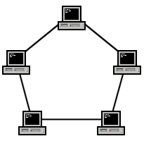

Ein Netzwerk ist ein Zusammenschluss von verschiedenen netzwerkfähigen Geräten. Deren Anordnung in Netzwerken nennt man Topologie. Damit Geräte kommunizieren können gibt es verschiedene Schichten, die sich verschiedene Aufgaben bei der Kommunikation teilen. Diese Schichten werden im OSI-Modell definiert.
Topologie
Die Topologie beschreibt die physikalische Anordnung von Geräten in einem Netzwerk. Es gibt verschiedene Möglichkeiten der Anordnung, am häufigsten werden die vermaschten, oder Stern-Formationen benutzt.-
Vermascht
 Am häufigsten kommt die vermaschte Formation zum Einsatz. Das bekannteste Beispiel ist dafür das Internet.
Der Vorteil von einem vermaschten Netz ist, dass ein Teil ausfallen kann und es immer noch funktioniert.
Wenn jedes Gerät mit allen anderen verbunden ist, nennt man diese Formation auch vollvermaschtes Netz.
Am häufigsten kommt die vermaschte Formation zum Einsatz. Das bekannteste Beispiel ist dafür das Internet.
Der Vorteil von einem vermaschten Netz ist, dass ein Teil ausfallen kann und es immer noch funktioniert.
Wenn jedes Gerät mit allen anderen verbunden ist, nennt man diese Formation auch vollvermaschtes Netz.
-
Stern-Topologie
 Auch häufig wird die Stern-Topologie benutzt. Diese kommt überwiegend bei Heimnetzwerken zum Einsatz.
Jedes Gerät hat eine direkte Verbindung zu dem Switch oder Hub, oft ist die ein Router.
Im Gegensatz zum vermaschten Netz wird kein komplexes Routing benötigt, aber dafür fällt das komplette
Netz aus, wenn der Switch oder Hub ausfällt.
Auch häufig wird die Stern-Topologie benutzt. Diese kommt überwiegend bei Heimnetzwerken zum Einsatz.
Jedes Gerät hat eine direkte Verbindung zu dem Switch oder Hub, oft ist die ein Router.
Im Gegensatz zum vermaschten Netz wird kein komplexes Routing benötigt, aber dafür fällt das komplette
Netz aus, wenn der Switch oder Hub ausfällt.
-
Ring-Topologie
 In diesem Fall werden die Geräte im Netz hintereinander in Form eines Ringes zusammengeschlossen. Die Vorteile des Typens sind dass immer eine konstante Übertragungsrate besteht. Die Nachteile des Netzwerkes sind die teuren Kosten und das hohe Ausfallrisiko. -
Bus-Topologie
 Bei der Bus-Technologie werden mehrere Geräte an ein Kabel angeschlossen, dies bringt nur geringe Kosten
mit sich. Wiederrum hat das Netzwerk ein noch höheres Ausfallrisiko, als ein Ring-Netzwerk. Zudem
muss sichergestellt werden, dass Daten am Ende des Datenkabels nicht reflektiert werden und dass nur
ein Computer zur gleichen Zeit Daten sendet. Deswegen wird diese Technologie heute nicht mehr so häufig
eingesetzt.
Bei der Bus-Technologie werden mehrere Geräte an ein Kabel angeschlossen, dies bringt nur geringe Kosten
mit sich. Wiederrum hat das Netzwerk ein noch höheres Ausfallrisiko, als ein Ring-Netzwerk. Zudem
muss sichergestellt werden, dass Daten am Ende des Datenkabels nicht reflektiert werden und dass nur
ein Computer zur gleichen Zeit Daten sendet. Deswegen wird diese Technologie heute nicht mehr so häufig
eingesetzt.
OSI-Modell
Das OSI-Modell ist ein Beispiel-Modell für Protokolle und deren Arbeitsbereiche. Das Modell arbeitet mit verschiedenen Schichten, um den Arbeitsbereich von Protokollen einzugrenzen. Insgesamt gibt es 7 Ebenen, wobei die Ebenen mit aufsteigender Nummer immer weiter in die Richtung des Computerprogrammes gehen.| Ebene | Name | Zweck |
|---|---|---|
| 1 | Bitübertragung | Diese Schicht ist dafür zuständig Verbindungen aufrechtzuerhalten und das Senden von Bits dadurch zu ermöglichen |
| 2 | Sicherung | Die 2. Schicht ist für die Verifizierung und Überprüfung der Pakete entwickelt worden. Es werden z.B. Prüfsummen den übertragenen Bits hinzugefügt, um später die Bits auf Vollständigkeit überprüfen zu können |
| 3 | Vermittlung-/Paket | Die 3. Schicht ist für das Routing der Pakete zuständig. D.h. sie muss Pakete über mehrere Knotenpunkte zum Empfänger vermitteln. |
| 4 | Transport | Die 4. Schicht ermöglicht die Benutzung von Ports und verhindert einen Stau von Paketen. Durch wird sie eine Ende-zu-Ende-Verbindung aufgebaut. |
| 5 | Sitzung | Die 5. Schicht versucht Zusammenbrüche einer Verbindung zu verhindern. Falls doch bietet sie Möglichkeiten die Verbindung schnell und möglichst ohne Verlust wieder aufzubauen. |
| 6 | Darstellung | Die 6. Schicht verschlüsselt und komprimiert die Daten. Sie agiert auch als Übersetzer, wenn unterschiedliche System miteinander kommunizieren. |
| 7 | Anwendungen | Die 7. Schicht steht den Programmen zum Datenaustausch zur Verfügung. Die meisten Protokolle stützen sich auf diese Schicht (z.B. HTTP oder FTP) |
Komponenten
Dies sind die wesentlichen Komponenten, die für die Funktionalität eines Netzwerkes, nötig sind. Natürlich sind auch noch einfachere physikalische Komponenten nötig z.B. ein LAN-Kabel.-
Router
Ein Router verbindet zwei Netzwerke miteinander. Häufig ist eins der Netzwerke ein privates Netzwerk. Der Router ist dafür zuständig Pakete zwischen diesen beiden Netzwerken zu vermitteln. Da oft Geräte in privaten Netzwerken eine bzw. keine öffentliche IP-Adresse haben muss ein Router mithilfe der Netzwerkadressübersetzung die Pakete vermitteln. -
Switch / Wireless Access Point
Switches und Wireless Access Point haben den allgemein gleichen Zweck: Mehrere Geräte in ein Netzwerk zu integrieren. Ein wesentlicher Unterschied ist aber, dass an einen Switch LAN-Kabel angeschlossen werden und dieser die Frames an nur an das jeweilige Kabel weiterleitet. Ein Wireless Access Point sendet dagegen die Daten drahtlos. -
Gateway
Ein Gateway dient als Übersetzer für verschiedene Netzwerkprotokolle. Er wurde vorrangig während der Entstehungszeit des Internets eingesetzt, da heutzutage fast immer das IP-Protokoll benutzt wird. Man findet heute noch häufig ein "Standardgateway", dieses leitet Anfragen, die in ein anderes Netzwerk gehören, um.